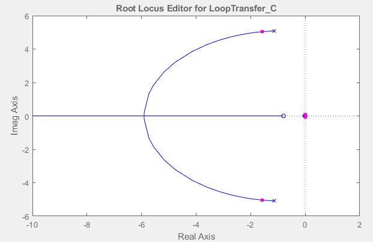

Controllo del volo ad ala fissa
Cessna 172: pitch damper e autopilota di assetto
Un ciclo di progetto completo su un modello non lineare a 6 gradi di libertà del Cessna 172, trimmato in salita stazionaria a 5000 m.
- Modelli longitudinale e latero-direzionale linearizzati numericamente e verificati con le derivate di stabilità analitiche; modi confrontati con le loro approssimazioni letterali.
- Pitch damper dimensionato sui criteri di qualità di volo di Livello 1: smorzamento del corto periodo portato da 0,217 a 0,3.
- Autopilota di assetto progettato con compensazione sul luogo delle radici, implementato come PID con saturazione dell'equilibratore a ±25° e anti-windup back-calculation.
- Anello chiuso eseguito in tempo reale, con il modello Simulink che alimenta FlightGear.
0,217 → 0,3smorzamento del corto periodo con Kq = −0,04
±15°comandi di assetto inseguiti in FlightGear
